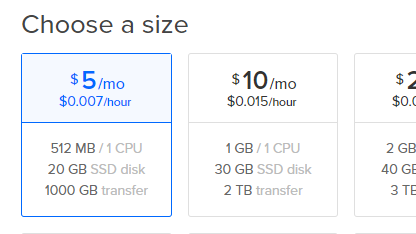
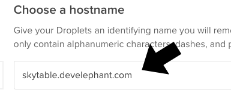
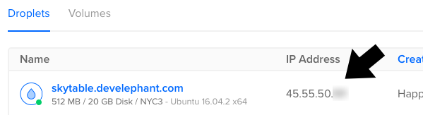

Coronium SkyTable runs best on a DigitalOcean Ubuntu 16.04 droplet.
Tip
If you're new to DigitalOcean please consider signing up with this link. Not only will you receive a $10 credit (2 free months), but it also helps support the continued development, and testing of Coronium SkyTable.
Screencast
View the installation instructions in a screencast format by clicking here.
Create A Droplet
Once you log into your DigitalOcean account, click the Create button and select Droplets from the menu.

On the next screen, first select a Ubuntu 16.04 droplet distribution.

Select your preferred droplet size. A 512MB/1 CPU droplet is a good starting point. You can always increase the size later.

Next, select a region for the droplet. Consider choosing a location closest to your most active user base.

Select your SSH profile to attach to the droplet.

Caution
There is an option where you can use a password instead of an SSH key, which may be easier if you're only testing Coronium SkyTable, though I wouldn't recommend it. You can learn more about generating SSH keys for DigitalOcean here: Creating SSH Keys.
Now give your droplet a hostname.

Be sure to replace skytable.develephant.com with your own hostname.
And finally, click the Create button to spin up the droplet.

Install SkyTable
Once your droplet is done spinning up, note the ip address.

Using a terminal/shell of your choice, SSH into the droplet.
Tip
You can use the built in shells on both OSX and Linux. For Windows, check out PuTTY.
ssh root@<your-instance-ip>
Replace <your-instance-ip> with the address that was assigned to your droplet.
Once you are connected to the droplet, copy and paste the following line into the terminal:
curl -LO https://s3.amazonaws.com/coronium-skytable/up.sh && sudo bash ./up.sh
Once the installation is complete, Coronium SkyTable is ready for action. Log out of the server by typing exit on the command line.